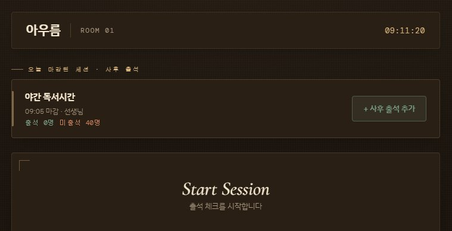

01접속 주소
kyh0175-afk.github.io/attendance/v2/
02출석 시작 절차
- 위 주소 접속 → Attend(출석 체크) 카드 선택
- 본인 담당 장소 카드 선택 (아우름·교과1실·해오름·리케이온)
- 프로그램 선택 (방과후/야간/심야/토요일/일요일 독서시간)
- 담당 교사 이름 입력 (아우름+교과1실 통합일 땐 생략 가능)
- "▶ QR 생성 및 출석 시작" 버튼 클릭 → 학생에게 QR 제시
03운영 시간표
| 프로그램 | 시간 | 장소 |
|---|
| 방과후 | 평일 16:30 ~ 18:20 | 아우름 / 교과1실 / 해오름 |
| 야간 | 평일 19:20 ~ 21:30 | 아우름 / 교과1실 / 해오름 |
| 심야 | 평일 21:30 ~ 23:00 | 리케이온 |
| 토요일 오전 | 토 08:30 ~ 12:30 | 리케이온 |
| 토요일 오후 | 토 13:30 ~ 17:30 | 리케이온 |
| 일요일 | 일 13:30 ~ 17:30 | 리케이온 |
04쌍둥이 장소 — 아우름 ↔ 교과1실
💡 통합 운영 방식
아우름과 교과1실은 같은 공간처럼 통합 운영됩니다. 교사 한 분이 양쪽을 동시에 관리하며, 학생은 어느 쪽 QR을 스캔해도 같은 출석 시간에 기록됩니다. 교사 화면의 출석 명단에는 학생 이름 옆에 장소 배지(아우름 / 교과1실)가 붙어 학생이 어느 쪽에서 스캔했는지 구분할 수 있습니다.
05심야 감독 자동 채움
리케이온에서 심야 독서시간을 선택하면 그날의 감독 교사 이름이 자동 입력됩니다. 감독표 기준이라 실제 감독자와 다를 수 있으니 시작 버튼 전에 반드시 확인하고, 다르면 직접 지우고 올바른 이름을 입력하세요.
⚠ 이미 시작한 뒤 이름이 잘못됐다면
관리자에게 연락하세요. 관리자 페이지 → 출석 기록 탭에서 해당 세션 선택 → 교사 이름 옆 연필 아이콘으로 수정 가능합니다.
06출석 마감
- 수업 끝나거나 모든 학생 출석 완료 시 출석 마감 버튼 클릭 → 확인 창에서 마감 선택
- 마감 후에는 학생이 더 이상 QR을 스캔할 수 없음
- 굳이 20분을 다 기다릴 필요 없음
Cosmos 문제가 생겼을 때
TROUBLESHOOTING
07QR 시간이 끝났을 때 — 연장 안내 창
QR 코드 유효 시간 20분이 지나면 자동으로 연장 안내 창이 뜹니다. 5분 카운트다운 안에 선택해야 합니다.
- + 10분 연장 — 아직 올 학생이 있으면. QR이 다시 활성화됨. 연장은 1회만 가능
- 세션 마감 — 더 받을 학생 없으면. 출석 시간 종료
- 5분 안에 아무것도 안 누르면 → 자동으로 마감 처리 (안전함)
08학생이 QR을 스캔하지 못할 때 — 수동 출석 추가
학생 휴대폰이 없거나 인터넷 문제로 QR이 안 될 때:
- 교사 화면 우측 상단 "√ 수동 출석" 버튼 클릭
- 숫자 키패드에 해당 학생의 학번 5자리 입력
- "출석" 버튼 눌러 확정 → 명단에 즉시 추가됨
09뒤늦게 온 학생 — 사후 출석 추가
수업이 끝나거나 출석 시간이 이미 마감된 뒤 학생이 왔을 때. 마감된 세션에 나중에 학생을 추가하는 것을 사후 출석이라고 합니다.

설정 화면 위쪽 — 오늘 마감된 세션 목록과 + 사후 출석 추가 버튼
- 메인 화면 → 본인 장소 카드 선택 → 교사 화면 진입
- 설정 화면 위쪽 "오늘 마감된 세션 · 사후 출석" 영역에서 해당 출석 시간 카드 찾기
- 카드 우측의 "+ 사후 출석 추가" 버튼 클릭
- 숫자 키패드에 학번 입력 → 확정
✓ 사후 출석은 구분 표시됨
사후로 추가한 학생은 기록에서 "사후" 라벨로 구분되므로 정상 출석과 혼동되지 않습니다.
10학생이 "출석 안 됐어요"라고 할 때
- 먼저 교사 화면 출석 명단에서 해당 학생 학번·이름 확인 (이미 출석 처리됐을 수 있음)
- 명단에 없으면 → 위 08 수동 출석으로 직접 추가
- 해당 출석 시간이 이미 마감됐으면 → 위 09 사후 출석으로 추가
- 본인 기록은 모두 정상인데 학생이 못 봤다면 → 관리자에게 연락 (관리자가 실시간 탭에서 해당 학번 조회 가능)
11QR 코드를 스캔해도 연결 안 될 때
- QR 만료 — 20분 지났으면 교사가 연장하거나 새 QR 생성 필요
- 학생 휴대폰 인터넷 — 와이파이 불안정하면 LTE 데이터로 전환 권유
- 교사 화면 새로고침 — 드물게 교사 화면이 멈춰 있을 수 있음
- 위 방법 다 해도 안 되면 → 수동 출석으로 대체